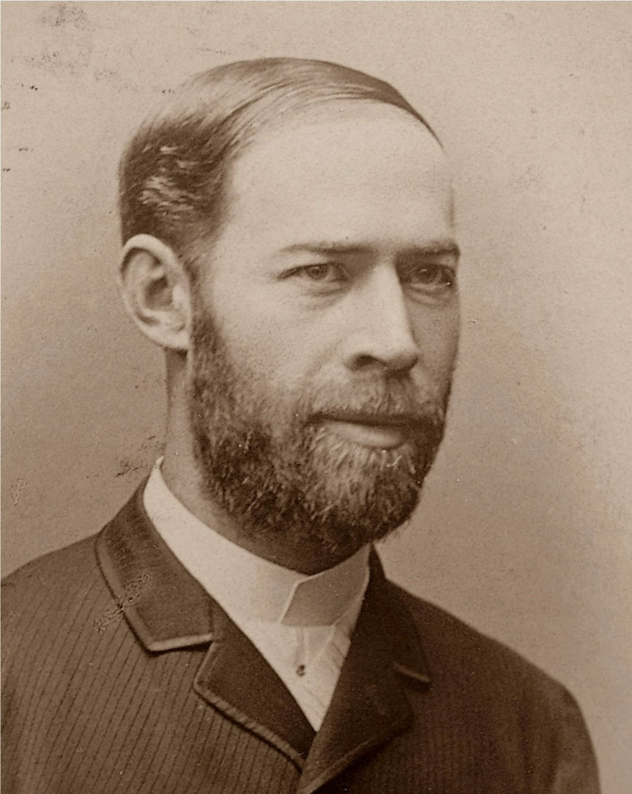

∇ · E = ρ / ε₀
∇ · B = 0
∇ × E = −∂B/∂t
∇ × B = μ₀(J + ε₀∂E/∂t)
The lab at Karlsruhe Polytechnic — surrounded by the tools of an invisible search.

"I do not think that the wireless waves I have discovered will have any practical application."
— Heinrich Hertz, 1890